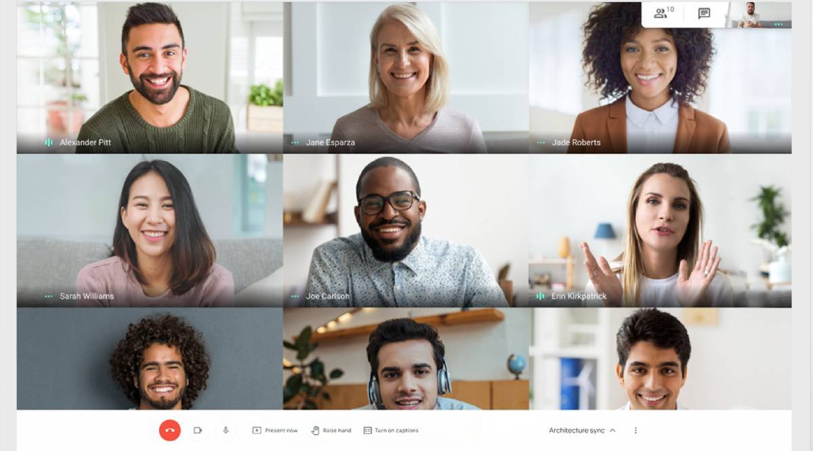

Google Meet receives a new update

Google Meet is getting a bunch of new features for its free and Workspace users that are designed to make it easier to control meetings. The search giant mentioned that the new features are some of the highly requested features by its users. They include the ability to add up to 25 co-hosts per meeting, new moderation and safety features, and an updated Quick access setting. It is worth noting that Google also mentions that not all features would be available for all users.
Through a post on its Workspace blog, Google announced that Google Meet users will be able to grant rights for hosting a meeting with up to 25 co-hosts. It can be done by granting these users Hosts controls in the People panel. All the co-hosts will get to access and utilise the controls available with the host.
Hosts and co-hosts now have the ability to limit who can share screens, send chat messages, mute all participants with one click, end the meeting for all, and control who can join the meeting and how through the Quick access settings.